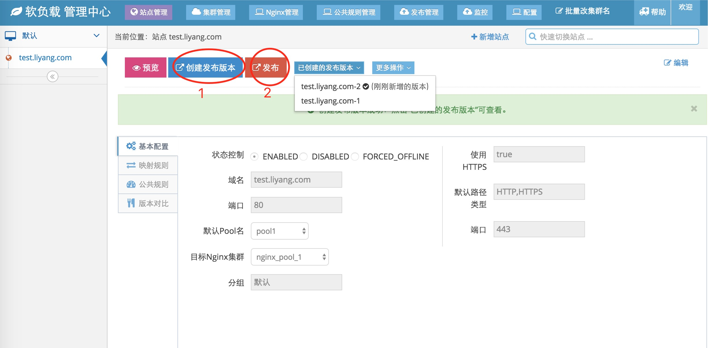
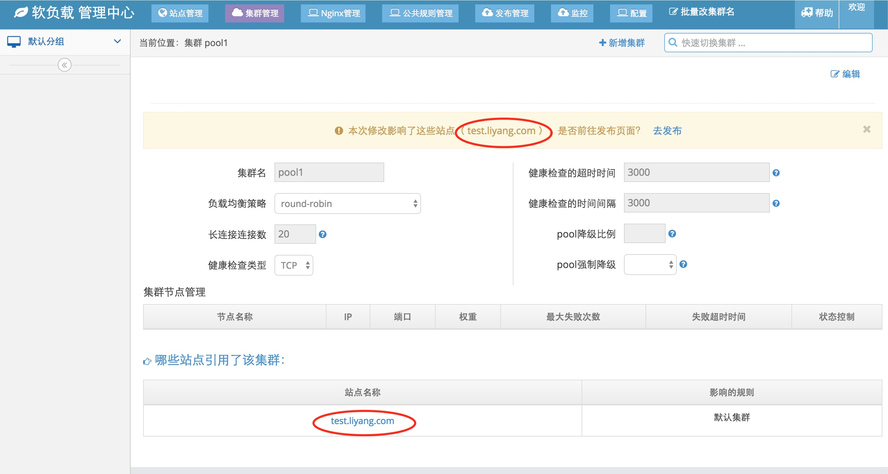
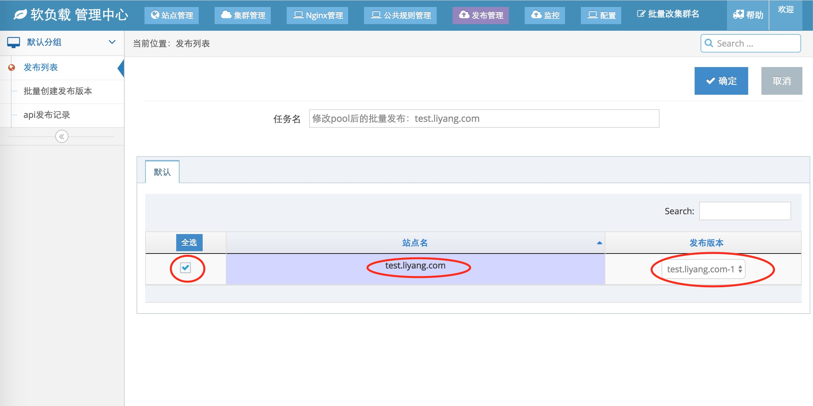
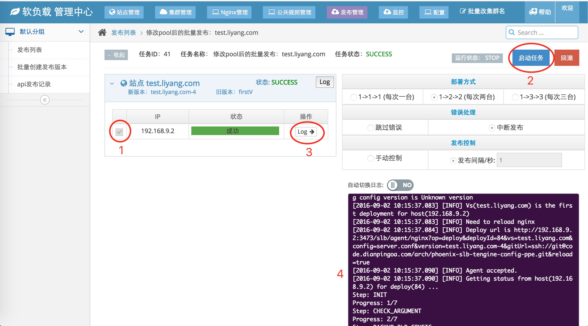
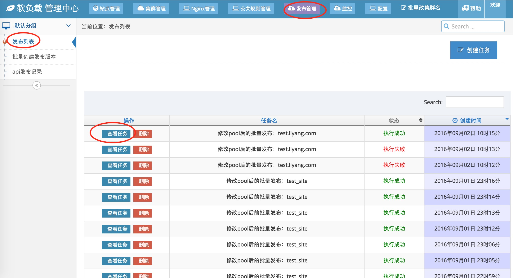

3.6 部署
本节介绍如何部署Nginx配置文件。
3.6.1 Nginx配置文件组成方式
我们是这样管理Nginx文件的：
在Nginx服务器上，nginx/conf目录下，建立了一个phoenix-slb目录。该目录下存放着由Camel管理的站点配置文件。
每个站点对应着一个单独的文件夹，文件夹下有一个server.conf，存放着本站点的配置。
假设有两个站点a.liyang.com，b.liyang.com，其组织方式如下：
phoenix-slb
- a.liyang.com
- server.conf // a.liyang.com对应的配置文件
- b.liyang.com
- server.conf // b.liyang.com对应的配置文件部署操作是以站点为粒度。每次部署，即更改phoenix-slb下的对应站点配置文件，并重启Nginx的过程。
3.6.2 触发部署操作
共有两个场景触发部署操作：
1.修改站点信息。此时该站点需要重新部署
如需对当前站点进行部署操作，请如下图所示，先创建一个发布版本，再点击发布按钮，即可跳转到部署页面

我们抽象了一个发布版本的概念。每次需要部署时，都先创建一个发布版本。发布版本是一个历史快照，不仅保存了本次发布的站点信息，也保存了本次发布的其它相关信息，如业务集群信息等。从而完全保存了该发布版对应的信息。
切换到一个发布版本，即可生成完全与创建发布版本时间点一致的配置文件。2.修改业务集群信息。此时所有业务集群涉及到的站点都需部署
业务集群界面的第三部分为：哪些站点引用了该集群(见配置业务集群小节)。当编辑该集群时，会自动提示是否部署涉及到的站点：

点击"去发布"按钮，即可跳转到部署页面
3.6.3 部署
进入部署页面后，部署流程如下：
1.选择本次部署的站点及版本：

如图所示，勾选所需发布的站点，并选择站点对应的发布版本。
通过更改站点，或者更该集群进入该页面，会自动对相关站点进行打勾并自动选择对应版本。该操作由JavaScript完成，页面需要加载JavaScript，所以请稍等页面自动打勾完毕。
勾选完成后，再点击"确定"按钮，进入发布页面。
2.进入发布页面后，请如图所示进行操作：

首先选择需要发布的Nginx服务器。这里会列出站点对应Nginx集群的所有机器，可以根据需要勾选。建议选择全部Nginx服务器，否则会造成Nginx集群配置不同步。
选择完毕后，点击启动任务按钮，camel-admin开始调用camel-agent，发布配置文件。
完成发布后，会在状态栏显示绿色的"成功"框，或者红色的"失败"框。此时点击状态框右侧的"Log"按钮，即可在右侧的日志框显示本次发布的日志。
如果发布失败，请先查看此次发布的log。log会记录camel-agent的发布信息，往往能直接反映出问题所在。
3.6.4 查看历史部署记录
您也可查看历史发布记录。如下图所示：

首先点击导航栏中的"发布管理"按钮，然后选择左侧边栏的"发布列表"。右侧会列出历史发布记录。
点击一个部署任务对应的"查看任务"按钮，即可跳转到该次部署任务的部署页面。如果本次部署页面是失败的，可在此页面上对这次部署任务继续进行操作。